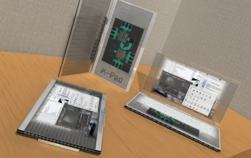

400-500-8888
时间：2016-04-21

这两年来，万物移动的潮流成为了业内的主流观点。不少业内人士表示，未来的办公、娱乐、学习等一站式的用户场景都将脱离PC，由操作完成。
然而，这两年来，以iOS和Android未代表的移动端操作系统在生产力工具这一层面上始终没有突破，人们逐渐意识到，传统的笔记本电脑才是他们应该回归的地方。虽然要回归，但完全采用传统的PC显然不是最佳选择。我们看到，微软、苹果、小米都在寻求未来PC的发展方向。这背后正是移动端反哺PC端，PC未来必将全面触控化带来的必然结果。
两端融合成为趋势
今年以来，国内外各厂商越来越注重PC产品新形态的探索。微软、苹果以及传闻中的小米都成为了探索的先行者。值得注意的是，移动端和PC端的两端融合都成为了这些先行者的探索思路。
10月6日，微软硬件新品发布会上，微软通过两款PC产品征服了世界。全功能平板电脑Surface Pro 4以及微软的第一款笔记本Surface Book惊艳无比，触控笔、触摸屏以及注重生产力的Windows系统使得微软的两款笔记本叫好又叫座。至此，微软的Win10和Win10 Mobile实现了手机与PC之间的进一步互联互通。
苹果则是两条腿走路，一方面通过iPhone带来的品牌优势不断改进并推广自己的Macbook产品线，另一方面则推出类笔记本形态的iPad Pro，企图通过一种新形式挽救平板电脑这一产品线，并寻找PC和手机两端融合的新道路。
小米也是如此。今年夏季以来，小米频频被供应链传出将涉足PC行业的消息。这几天来，更是被曝出引进联想副总裁，要在2016年推出笔记本的传闻。根据目前的公开报道，小米笔记本可能会与传统PC大不相同，以MIUI为核心的小米笔记本会探索一条两端融合的新思路。
移动端正反哺PC端
这次PC端和手机端的两端融合实际上与多年前微软所开发的多普达掌上电脑大不相同。多普达掌上电脑完全是PC端移植到移动端的产物，无论是图标、UI、外观，多普达都无法脱离当时Windows 98以及Windows XP的逻辑。
在多普达的时代，多普达是PC延伸的产物，但从Win8采用Windows Phone上的Metro UI开始，我们可以发现，手机端反哺PC端已经成为了PC的一大发展趋势，PC逐渐成为了手机的延伸产物。只可惜Windows 8这一步迈得太大，终究是扯着了蛋。
移动端反哺PC端这一逻辑放在苹果的Mac身上更是明显。Mac用户大多由iPhone用户转化而来。由于iPhone带来的极致体验以及方便的云同步服务，拥有一台Mac成为了iPhone用户的最佳选择。
多年以前，微软试图让手机变得更像PC,但走过Win10的改进之后，微软正在试图让PC更像手机。在Win10上，微软正是试图让手机端和PC端的视觉体验和操作逻辑尽可能相同。
微软另一个大招更值得我们警觉，Win10 Mobile正式版上即将实现的一个名为Continuum的功能，让Window Phone只要接上显示器就可以变成一台简单的Win10电脑，这正是得益于微软推出的Universal App。
未来PC形态几何？
业内曾一直唱衰PC，认为PC产业已是夕阳产业。但在这种移动端反哺PC端的趋势下，PC产业实际上正在迎来一场新变革，由移动端反哺、两端融合为目标的PC产业正是急需攻克的朝阳产业。
传统的笔记本电脑产品几乎都是翻盖式的。但目前来看，在新一代的PC中，我们见到了更多的产品形态，滑盖式、翻转式、折叠式，甚至可插拔的屏幕，产品的形态发生了前所未有的变化，一方面它足够轻薄便携，低功耗同时性能足够强悍，另一方面除了拥有传统笔记本电脑的功能以外，凭借着触控、轻薄甚至可插拔的屏幕等特点，也拥有了平板电脑的特性，满足我们在不同使用场合中的无缝衔接，并且数据也不用倒来倒去。
但这依然不够，因为微软的Surface以及苹果的Macbook与手机之间的体验仍然不够统一，PC和手机两款产品之间还是存在诸多连接上的障碍。
未来PC的形态一定是全触控式的。两款产品、一套系统。PC与手机拥有相同的图标、相同的UI、相同的内核、相同的使用方法，两者利用云同步多屏互动。微软、苹果的思路可谓是代表了未来。传闻中的小米实际上也正是以“移动端反哺PC端”的思路正在对自身的产品进行探索。
未来的PC办公趋势是跨平台、跨终端、跨屏幕的。这两年来，PC行业的发展正是体现着这一趋势。基于X86架构的atom和core m平台已经慢慢轻量化，越来越多的笔记本电脑也装上了触摸屏，打通PC和手机的技术条件正在变得越来越成熟。
正是如此，PC在这种大环境下非但不会死亡，反而迎来了新生。微软、苹果、小米纷纷押宝PC的背后，实际上看重的是PC作为生产力工具移动端无可替代的特点，未来的PC在移动端反哺和两端融合的大趋势下，依然大有作为。
化用的一句话或许可以形容PC行业的历史和未来：
PC的昨天很辉煌，今天很残酷，明天会更残酷，但是后天会很美好。
Copyright © 2015-2016 Maker Cloud 创客云 版权所有粤ICP备32852599-1


 在线咨询
在线咨询 在线咨询
在线咨询 400-500-8888
400-500-8888